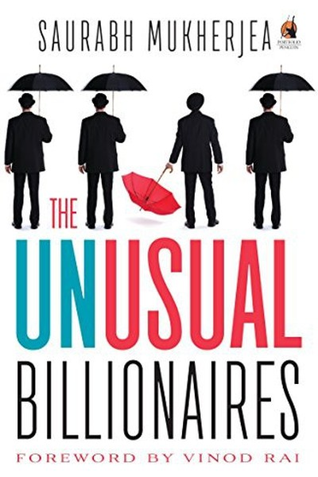

Library › Money & Finance
The Unusual Billionaires — Summary & Key Lessons

India's best wealth creators — high ROCE, low debt, decades of patience.
📖 OPEN THE FULL INTERACTIVE BREAKDOWN →🌐 Read it in Hindi, Hinglish, Gujarati, Tamil & 22 more languages — free, with audio.
💡 The Big Idea
Saurabh Mukherjea — the founder of Marcellus Investment Managers — studied India's best long-term wealth creators (companies like Asian Paints, Page Industries, Pidilite) and found they share a rare combination: high Return on Capital Employed (ROCE), low debt, and decades of consistent execution. His message to Indian investors is blunt: stop chasing tips and IPOs; instead, find companies that have proven they can compound capital for years, and hold them for years. The book's core: wealth creation in India is not about luck or timing — it is about identifying 'unusual' businesses that generate extraordinary returns on the capital they use, and then having the patience to let compounding work.
🧠 The 6 Key Lessons
Lesson 1: The Sausage Factory Test: Follow the Money Trail
Part 1: The Problem
Mukherjea opens with a simple question that filters thousands of companies: how does this business actually make money? He calls it the 'sausage factory' test — walk through how a rupee enters the business, gets transformed, and comes out as profit. Most Indian 'hot' stocks fail this test instantly: the revenue story doesn't connect to a real cash trail. The unusual billionaires pass it with boring clarity — their money trail is visible, simple and repeatable. Before investing in anything, you must be able to explain the sausage factory in one paragraph. If you can't, the company is a story, not a business.
📖 Example: Mukherjea shows how Asian Paints' money trail is stunningly simple: paint goes in, painted walls come out, cash comes back — every year, for five decades. Meanwhile, dozens of 'concept' companies with elaborate stories failed the test and destroyed capital. Read the full example →
⚡ Do this: Before your next investment (or major purchase), write one paragraph tracing the money trail: where does the revenue come from, and how does it become profit? If you can't, don't invest.
Lesson 2: ROCE: The Scorecard That Separates Wealth Creators From Destroyers
Part 2: The Framework
The single metric Mukherjea obsesses over: Return on Capital Employed (ROCE) — how much profit a company generates for every rupee of capital it uses. His threshold for 'unusual' is demanding: consistently high ROCE (20%+ for years, ideally decades) signals a business with real pricing power and efficient operations, while low ROCE signals a capital guzzler that will destroy shareholder wealth no matter how big it grows. Growth without high ROCE is a trap: a company can grow revenue forever and still be worthless if it needs endless capital to do it. ROCE is the report card that tells you whether the business is an asset or a liability.
📖 Example: Mukherjea contrasts two Indian giants: one grew fast but needed constant capital injections (low ROCE — a wealth destroyer), while Asian Paints and Page Industries grew steadily with minimal capital (high ROCE — wealth creators). The stock market eventually… Read the full example →
⚡ Do this: For any company you're considering, look up its ROCE for the last 5-10 years. If it's consistently below 15%, walk away regardless of the story — the scorecard doesn't lie.
Lesson 3: The Virtuous Cycle: Picking Winners From the Winners
Part 2: The Framework
Mukherjea's research revealed that India's unusual billionaires cluster together — they are suppliers to, customers of, or investors in each other. The 'virtuous cycle' is a network effect: great companies find it easier to do business with other great companies, and their excellence reinforces each other. For the investor, this creates a shortcut: instead of scanning 5,000 stocks, study the ecosystem around the proven winners — the suppliers they rely on, the partners they trust. The insight extends to careers and business: position yourself inside virtuous cycles where excellent people and companies reinforce your own standards, rather than in markets where the best are dragged down by the worst.
📖 Example: Mukherjea maps how Pidilite's distributors, Asian Paints' supply chain, and the FMCG ecosystem form a web of high-quality operators — and shows how investing in the 'satellites' around proven winners has historically beaten picking random 'cheap' stocks. Read the full example →
⚡ Do this: Identify the best operator in your field or city. List 5 businesses or people that serve them — and investigate whether those 'satellites' are also excellent. Position yourself (or your money) in that orbit.
Lesson 4: India's Best CEOs: Capital Allocation Is the CEO's Real Job
Part 3: The People
The unusual billionaires share another trait: leaders obsessed with capital allocation — where every rupee of profit goes. Mukherjea's analysis of India's best CEOs (from Asian Paints' K.M. Mammen to Page Industries' family founders) shows they treat every decision — reinvest, dividend, acquisition, buyback — as a compounding decision. Bad CEOs grow for growth's sake, diluting shareholders; great CEOs grow only where returns justify it and return the rest to owners. The lesson for evaluating management: don't ask 'is this CEO charismatic?' — ask 'what did this CEO do with the company's money over the last ten years?' The allocation record is the resume.
📖 Example: Mukherjea shows how Asian Paints' management consistently reinvested only in high-return expansion and paid out the rest — a discipline that turned every decade into a compounding machine, while peer companies that chased random diversification destroyed… Read the full example →
⚡ Do this: If you lead a team, a budget or a business: list your last 5 major capital or time allocations. Would an outsider say each one was chosen for return, or for ego? Fix the next decision accordingly.
Lesson 5: The Checklist: Six Filters Before You Buy
Part 3: The People
Mukherjea distills his framework into a practical checklist for Indian investors: (1) high and consistent ROCE, (2) low debt, (3) a clear money trail, (4) management with a capital-allocation record, (5) a business that compounds for decades rather than quarters, and (6) a price that doesn't overpay for the excellence. The checklist exists to replace emotion with procedure — the same reason pilots use checklists. Every 'must-buy' tip, every IPO hype, every 'sure-shot' stock gets run through the six filters, and most die there. The checklist is not a guarantee of winners; it is a guarantee of avoiding losers, which is more than half the game.
📖 Example: Mukherjea describes how the checklist would have filtered out the great Indian wealth destroyers of the 2000s — infrastructure companies with huge debt and low ROCE that looked 'strategic' but destroyed every rupee of equity. The filters were public; the… Read the full example →
⚡ Do this: Write the six filters on a card. Run your next investment idea through them on paper — and if it fails more than one, treat the idea as rejected until it passes.
Lesson 6: Patience: The Unusual Billionaire's Real Secret
Part 4: The Practice
The final and most important chapter: even the best framework fails without patience. Mukherjea's data shows that India's greatest wealth creators rewarded investors who held for a DECADE — while most investors churn their portfolios every few months, paying taxes and fees while missing the compounding. The unusual billionaire investor is boring: identify the unusual business, buy it at a reasonable price, and hold it while the world panics, booms and panics again. Patience is not passivity — it is the active decision to let verified excellence compound. The stock market is a device for transferring money from the impatient to the patient, and this book is the instruction manual for being on the receiving end.
📖 Example: Mukherjea's own funds' returns come from a handful of holdings held for years through every market cycle — while the average Indian investor's returns are destroyed by churn, tips and panic selling. The difference between them is not intelligence; it is the… Read the full example →
⚡ Do this: Review your current investments and ask of each: 'Would I buy this today?' If yes, commit to holding it for the next 12 months without checking the price daily. Write the hold-date on a sticky note.
✅ 5-Step Action Plan
- Write the money trail of your next investment idea in one paragraph.
- Check ROCE history (5+ years) before any stock purchase; reject below 15%.
- Map the 'virtuous cycle' around the best operator you know — and join it.
- Create your six-filter checklist and run every idea through it on paper.
- Pick one holding and commit to 12 months of no-churn, then review.
💬 Best Quotes from The Unusual Billionaires
- “The best investment is the one you can understand in one paragraph.”
- “Growth without high returns on capital is just a bigger pile of destruction.”
- “The stock market transfers money from the impatient to the patient.”
Interactive version: mark lessons as read, listen in your language, share quote cards.